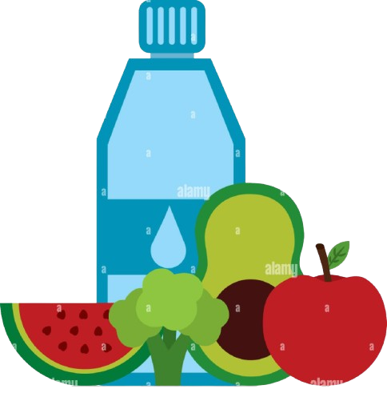
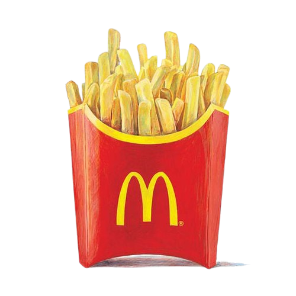

Obesity
childhood statisticsChildren and adolescems (ages 2-19) ARE OVERWEIGHT OR OBESE and almost NONE meet recommended healthy diet and physical activity amount.
An estimated

12.5 MILLION children (ages 5years or younger). spend 33 HOURS / WEEK in child care settings and consume nearly all of their daily calories.
OBESITY IS LINKED TO MORE CHRONIC CONDITIONS THAN :
-
Smoking -
Poverty -
Drinking
increasing the risk of more than 20 preventable diseases includ sleep ,apnea ,asthma,heart diseases,type 2 diabetes,osteoarthntis,high blood pressure and high-cholesterol stroke.
RISK FACTORSchildren in their early teems who are obese and who have high triglyceride levels have artries similler to those of 45-year olds obese children as young as ages 3 show indicators for developing heart disease later in life | children who are overweight from the ages of 7 to 13 may develop heart disease as early as age25. obese children are twice as likely to die before age 55 than their slimmer peers. |
FRENCH FRIES
are the most common vegetable that children eat,comprising 25% of their vegetable intake

(Which may fack important fibre found in whole friut) makesup 40% of children's deily frult intake.
40% - 50% OF TODDLERS watch more television than is recommended.
NEARLY 1/2 OF PRESCHOOLERS don'get enought physical activity
the cost of obesity in the united states is staggering totaling about $147 BILLION
CHILDREN WHO EAT HEALTHY FOODS AND GET DAILY PHYSICAL ACTIVITY HAVE:
fewer school absences higher academic achievement higherself-esteem fewer behavioral problems